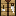
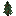

动物油脂
像幻翼膜燃料狩猎获取，用于燃料、小油灯和牧师红石交易。
一些物品暂时复用原版外观。下面的“看起来像”专门帮助你辨认它们，实际用途以名称为准。
狩猎获取，用于燃料、小油灯和牧师红石交易。
早期食物，也用于向渔夫换标枪、向武器匠换弓。
4毛皮合成。提供保暖，移动速度降低10%。
从工具匠处取得，是有效开采硬冰的专用工具。

开采或爆破硬冰得到，用于冰建筑材料。

左键近战5伤害；右键蓄力半秒投掷，基础伤害7，落地可捡回。
16云杉原木交易获得。可熔炼为铁锭，也是极地设备的核心材料。
铁块级硬度，需要冰镐。通常构成厚冰盖。
不可正常挖掘。它是冰原地下的主要封闭层。
刚制作时为空；放下、添料、用打火石点燃。手持不供暖。

普通3×3配方也能做；加热器和太阳灯只能在这里制作。
六面相邻一个红石块即可启动，并解冻室内冻结土壤。
六面相邻红石块时亮度15，可为室内种植和圣诞树苗提供光照。

加热器在有顶盖处生成。可锄地或铲成路径；失去供热会重新冻结。

工具匠用1铁锭出售。需要足够空间和至少9级光照。
| 物品 | 材料与摆法 |
|---|---|
| 皮毛斗篷 | 2×2放置4个毛皮。 |
| 极地工作台 | 工作台居中，上下左右各1铁板。 |
| 加热器 | 8铁板包围中心红石，只能在极地工作台合成。 |
| 太阳灯 | 中心红石、四边铁板、四角玻璃，只能在极地工作台合成。 |
| 箭 | 1燧石 + 1木棍，无序合成4箭。 |